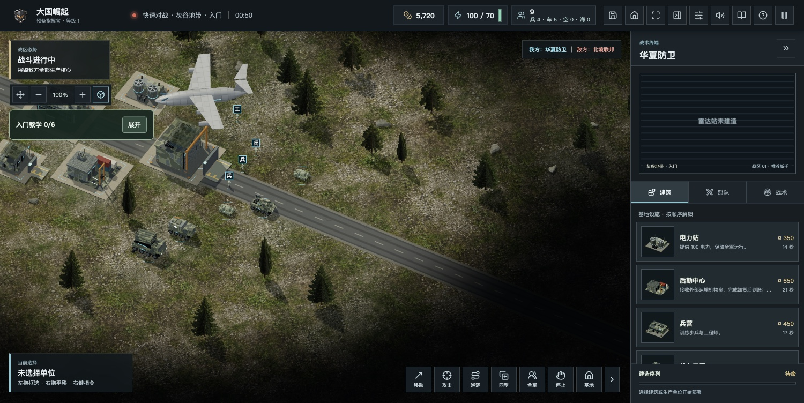
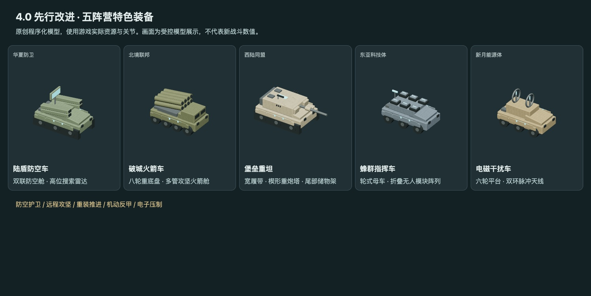

先把一局打好
本轮已加入易读比例和阵营辨识；继续用实际反馈校准。
网页 3.1 · 迈向 4.0 / 2026年11月6日
最近有玩家提出：比例调得接近现实以后，人物、坦克在默认镜头下太小。这个问题确实存在。我们这次先把“看清楚、选得准”补上，再继续推进阵营和战役。
100% 镜头下，人员显示放大约50%，地面车辆放大约20%。拉远镜头时做有限补偿，飞机和舰船保留大小关系。进入战斗后，在顶部“界面设置 → 单位比例”可以切换原比例。
这只是显示调整，射程、碰撞、速度和伤害不会跟着变。人物上方用“兵、工、侦”小标记帮助识别；鼠标和触屏的选取范围也分别优化。

五种阵营特色装备有了独立的原创模型。防空雷达、多管火箭、重坦炮塔、无人模块和脉冲天线成为主要识别特征。模型尽量简洁，保留活动炮塔和火口，让普通电脑也能承受成队部署。

东亚“蜂群母机”改名“蜂群指挥车”，因为它实际使用地面路径。选阵营时展开说明，可以直接看到建议编队、打法和弱点。
本轮已加入易读比例和阵营辨识；继续用实际反馈校准。
规划互斥研发分支，让侦察、防护、机动与攻坚有明确取舍。
规划少量区域的连续作战，带着损失、维修和资源选择进入下一关。
规划同种子挑战、随机事件与复盘，逐步验证长期可玩性。
研发分支和连续战役仍处于规划阶段，本次是3.1先行改进，不是完整4.0。网页先更新；桌面、ZIP和商店版以下载页及平台实际版本为准。TapTap《星港演习》科幻版独立维护。
欢迎体验后通过游戏内“意见反馈”告诉我们：默认镜头是否更清楚，最容易混淆的是哪两个兵种，下一步最想玩什么任务。